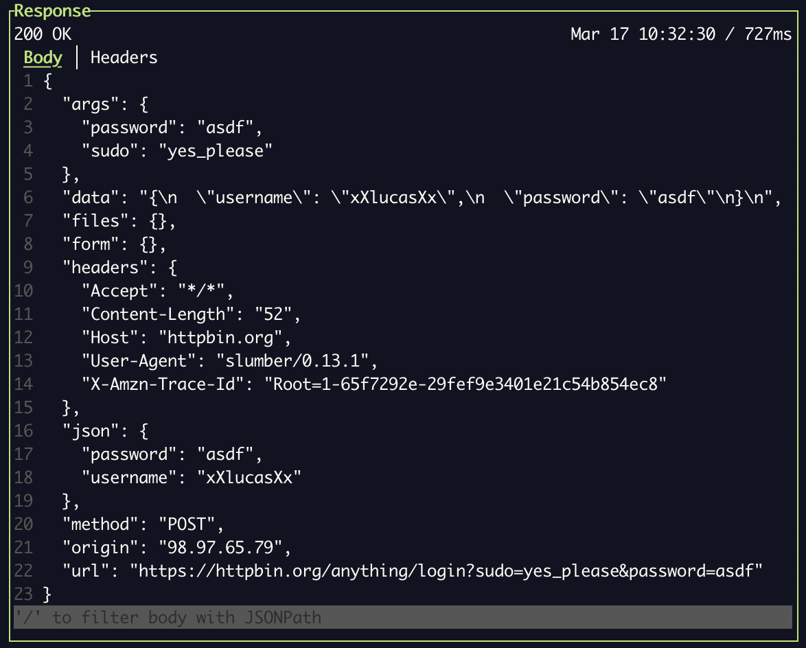

Data Filtering & Querying
Slumber supports querying data structures to transform or reduce response data.
There are two main use cases for querying:
- In chained template values, to extract data
- Provided via chain's
selectorargument
- Provided via chain's
- In the TUI response body browser, to limit the response data shown
Regardless of data format, querying is done via JSONPath. For non-JSON formats, the data will be converted to JSON, queried, and converted back. This keeps querying simple and uniform across data types.
Querying Chained Values
Here's some examples of using queries to extract data from a chained value. Let's say you have two chained value sources. The first is a JSON file, called creds.json. It has the following contents:
{ "user": "fishman", "pw": "hunter2" }
We'll use these credentials to log in and get an API token, so the second data source is the login response, which looks like so:
{ "token": "abcdef123" }
chains:
username:
source: !file
path: ./creds.json
selector: $.user
password:
source: !file
path: ./creds.json
selector: $.pw
auth_token:
source: !request
recipe: login
selector: $.token
requests:
login: !request
method: POST
url: "https://myfishes.fish/anything/login"
body: |
{
"username": "{{chains.username}}",
"password": "{{chains.password}}"
}
get_user: !request
method: GET
url: "https://myfishes.fish/anything/current-user"
query:
auth: "{{chains.auth_token}}"
While this example simple extracts inner fields, JSONPath can be used for much more powerful transformations. See the JSONPath docs or this JSONPath editor for more examples.
More Powerful Querying with Nested Chains
If JSONPath isn't enough for the data extraction you need, you can use nested chains to filter with whatever external programs you want. For example, if you want to use jq instead:
chains:
username:
source: !file
path: ./creds.json
selector: $.user
password:
source: !file
path: ./creds.json
selector: $.pw
auth_token_raw:
source: !request
recipe: login
auth_token:
source: !command
command: [sh, -c, "echo '{{chains.auth_token_raw}}' | jq .token"]
requests:
login: !request
method: POST
url: "https://myfishes.fish/anything/login"
body: |
{
"username": "{{chains.username}}",
"password": "{{chains.password}}"
}
get_user: !request
method: GET
url: "https://myfishes.fish/anything/current-user"
query:
auth: "{{chains.auth_token}}"
You can use this capability to manipulate responses via grep, awk, or any other program you like.
Querying Response in TUI
You can visually query a response body using the filter box at the bottom. Here is a full response, with no query applied:

And here it is with the query $.data applied: